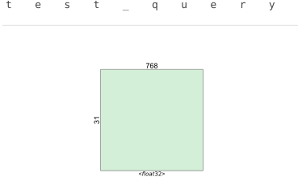

import wikipediaGet a wikipedia page to test IR
page = wikipedia.page("Cats")page.content'The cat (Felis catus), also referred to as domestic cat or house cat, is a small domesticated carnivorous mammal. It is the only domesticated species of the family Felidae. Advances in archaeology and genetics have shown that the domestication of the cat occurred in the Near East around 7500 BC. It is commonly kept as a house pet and farm cat, but also ranges freely as a feral cat avoiding human contact. Valued by humans for companionship and its ability to kill vermin, the cat\'s retractable claws are adapted to killing small prey like mice and rats. It has a strong, flexible body, quick reflexes, and sharp teeth, and its night vision and sense of smell are well developed. It is a social species, but a solitary hunter and a crepuscular predator. Cat communication includes vocalizations—including meowing, purring, trilling, hissing, growling, and grunting–as well as body language. It can hear sounds too faint or too high in frequency for human ears, such as those made by small mammals. It secretes and perceives pheromones.\nFemale domestic cats can have kittens from spring to late autumn in temperate zones and throughout the year in equatorial regions, with litter sizes often ranging from two to five kittens. Domestic cats are bred and shown at events as registered pedigreed cats, a hobby known as cat fancy. Animal population control of cats may be achieved by spaying and neutering, but their proliferation and the abandonment of pets has resulted in large numbers of feral cats worldwide, contributing to the extinction of bird, mammal, and reptile species.\nAs of 2017, the domestic cat was the second most popular pet in the United States, with 95.6 million cats owned and around 42 million households owning at least one cat. In the United Kingdom, 26% of adults have a cat, with an estimated population of 10.9 million pet cats as of 2020. As of 2021, there were an estimated 220 million owned and 480 million stray cats in the world.\n\n\n== Etymology and naming ==\nThe origin of the English word cat, Old English catt, is thought to be the Late Latin word cattus, which was first used at the beginning of the 6th century. The Late Latin word may be derived from an unidentified African language. The Nubian word kaddîska \'wildcat\' and Nobiin kadīs are possible sources or cognates.\nThe forms might also have derived from an ancient Germanic word that was absorbed into Latin and then into Greek, Syriac, and Arabic. The word may be derived from Germanic and Northern European languages, and ultimately be borrowed from Uralic, cf. Northern Sámi gáđfi, \'female stoat\', and Hungarian hölgy, \'lady, female stoat\'; from Proto-Uralic *käďwä, \'female (of a furred animal)\'.\nThe English puss, extended as pussy and pussycat, is attested from the 16th century and may have been introduced from Dutch poes or from Low German puuskatte, related to Swedish kattepus, or Norwegian pus, pusekatt. Similar forms exist in Lithuanian puižė and Irish puisín or puiscín. The etymology of this word is unknown, but it may have arisen from a sound used to attract a cat.\nA male cat is called a tom or tomcat (or a gib, if neutered). A female is called a queen (or sometimes a molly, if spayed). A juvenile cat is referred to as a kitten. In Early Modern English, the word kitten was interchangeable with the now-obsolete word catling. A group of cats can be referred to as a clowder, a glaring, or a colony.\n\n\n== Taxonomy ==\nThe scientific name Felis catus was proposed by Carl Linnaeus in 1758 for a domestic cat. Felis catus domesticus was proposed by Johann Christian Polycarp Erxleben in 1777. Felis daemon proposed by Konstantin Satunin in 1904 was a black cat from the Transcaucasus, later identified as a domestic cat.\nIn 2003, the International Commission on Zoological Nomenclature ruled that the domestic cat is a distinct species, namely Felis catus. In 2007, the modern domesticated subspecies F. silvestris catus sampled worldwide was considered to have likely descended from the African wildcat (F. lybica), following results of phylogenetic research. In 2017, the IUCN Cat Classification Taskforce followed the recommendation of the ICZN in regarding the domestic cat as a distinct species, Felis catus.\n\n\n== Evolution ==\n\nThe domestic cat is a member of the Felidae, a family that had a common ancestor about 10 to 15 million years ago. The evolutionary radiation of the Felidae began in Asia during the Miocene around 8.38 to 14.45 million years ago. Analysis of mitochondrial DNA of all Felidae species indicates a radiation at 6.46 to 16.76 million years ago. The genus Felis genetically diverged from other Felidae around 6 to 7 million years ago. Results of phylogenetic research shows that the wild members of this genus evolved through sympatric or parapatric speciation, whereas the domestic cat evolved through artificial selection. The domestic cat and its closest wild ancestor are diploid and both possess 38 chromosomes and roughly 20,000 genes.\n\n\n=== Domestication ===\n\nIt was long thought that the domestication of the cat began in ancient Egypt, where cats were venerated from around 3100 BC. However, the earliest known indication for the taming of an African wildcat was excavated close by a human Neolithic grave in Shillourokambos, southern Cyprus, dating to about 7500–7200 BC. Since there is no evidence of native mammalian fauna on Cyprus, the inhabitants of this Neolithic village most likely brought the cat and other wild mammals to the island from the Middle Eastern mainland. Scientists therefore assume that African wildcats were attracted to early human settlements in the Fertile Crescent by rodents, in particular the house mouse (Mus musculus), and were tamed by Neolithic farmers. This mutual relationship between early farmers and tamed cats lasted thousands of years. As agricultural practices spread, so did tame and domesticated cats. Wildcats of Egypt contributed to the maternal gene pool of the domestic cat at a later time.\nThe earliest known evidence for the occurrence of the domestic cat in Greece dates to around 1200 BC. Greek, Phoenician, Carthaginian and Etruscan traders introduced domestic cats to southern Europe. By the 5th century BC, they were familiar animals around settlements in Magna Graecia and Etruria. During the Roman Empire, they were introduced to Corsica and Sardinia before the beginning of the 1st century AD. By the end of the Western Roman Empire in the 5th century, the Egyptian domestic cat lineage had arrived in a Baltic Sea port in northern Germany.\nThe leopard cat (Prionailurus bengalensis) was tamed independently in China around 5500 BC. This line of partially domesticated cats leaves no trace in the domestic cat populations of today.\nDuring domestication, cats have undergone only minor changes in anatomy and behavior, and they are still capable of surviving in the wild. Several natural behaviors and characteristics of wildcats may have pre-adapted them for domestication as pets. These traits include their small size, social nature, obvious body language, love of play, and high intelligence. Since they practice rigorous grooming habits and have an instinctual drive to bury and hide their urine and feces, they are generally much less messy than other domesticated animals. Captive Leopardus cats may also display affectionate behavior toward humans but were not domesticated. House cats often mate with feral cats. Hybridization between domestic and other Felinae species is also possible, producing hybrids such as the Kellas cat in Scotland.\nDevelopment of cat breeds started in the mid 19th century. An analysis of the domestic cat genome revealed that the ancestral wildcat genome was significantly altered in the process of domestication, as specific mutations were selected to develop cat breeds. Most breeds are founded on random-bred domestic cats. Genetic diversity of these breeds varies between regions, and is lowest in purebred populations, which show more than 20 deleterious genetic disorders.\n\n\n== Characteristics ==\n\n\n=== Size ===\n\nThe domestic cat has a smaller skull and shorter bones than the European wildcat. It averages about 46 cm (18 in) in head-to-body length and 23–25 cm (9.1–9.8 in) in height, with about 30 cm (12 in) long tails. Males are larger than females. Adult domestic cats typically weigh 4–5 kg (8.8–11.0 lb).\n\n\n=== Skeleton ===\nCats have seven cervical vertebrae (as do most mammals); 13 thoracic vertebrae (humans have 12); seven lumbar vertebrae (humans have five); three sacral vertebrae (as do most mammals, but humans have five); and a variable number of caudal vertebrae in the tail (humans have only three to five vestigial caudal vertebrae, fused into an internal coccyx).:\u200a11\u200a The extra lumbar and thoracic vertebrae account for the cat\'s spinal mobility and flexibility. Attached to the spine are 13 ribs, the shoulder, and the pelvis.:\u200a16\u200a Unlike human arms, cat forelimbs are attached to the shoulder by free-floating clavicle bones which allow them to pass their body through any space into which they can fit their head.\n\n\n=== Skull ===\n\nThe cat skull is unusual among mammals in having very large eye sockets and a powerful specialized jaw.:\u200a35\u200a Within the jaw, cats have teeth adapted for killing prey and tearing meat. When it overpowers its prey, a cat delivers a lethal neck bite with its two long canine teeth, inserting them between two of the prey\'s vertebrae and severing its spinal cord, causing irreversible paralysis and death. Compared to other felines, domestic cats have narrowly spaced canine teeth relative to the size of their jaw, which is an adaptation to their preferred prey of small rodents, which have small vertebrae.\nThe premolar and first molar together compose the carnassial pair on each side of the mouth, which efficiently shears meat into small pieces, like a pair of scissors. These are vital in feeding, since cats\' small molars cannot chew food effectively, and cats are largely incapable of mastication.:\u200a37\u200a Cats tend to have better teeth than most humans, with decay generally less likely because of a thicker protective layer of enamel, a less damaging saliva, less retention of food particles between teeth, and a diet mostly devoid of sugar. Nonetheless, they are subject to occasional tooth loss and infection.\n\n\n=== Claws ===\n\nCats have protractible and retractable claws. In their normal, relaxed position, the claws are sheathed with the skin and fur around the paw\'s toe pads. This keeps the claws sharp by preventing wear from contact with the ground and allows for the silent stalking of prey. The claws on the forefeet are typically sharper than those on the hindfeet. Cats can voluntarily extend their claws on one or more paws. They may extend their claws in hunting or self-defense, climbing, kneading, or for extra traction on soft surfaces. Cats shed the outside layer of their claw sheaths when scratching rough surfaces.\nMost cats have five claws on their front paws and four on their rear paws. The dewclaw is proximal to the other claws. More proximally is a protrusion which appears to be a sixth "finger". This special feature of the front paws on the inside of the wrists has no function in normal walking but is thought to be an antiskidding device used while jumping. Some cat breeds are prone to having extra digits ("polydactyly"). Polydactylous cats occur along North America\'s northeast coast and in Great Britain.\n\n\n=== Ambulation ===\nThe cat is digitigrade. It walks on the toes, with the bones of the feet making up the lower part of the visible leg. Unlike most mammals, it uses a "pacing" gait and moves both legs on one side of the body before the legs on the other side. It registers directly by placing each hind paw close to the track of the corresponding fore paw, minimizing noise and visible tracks. This also provides sure footing for hind paws when navigating rough terrain. As it speeds up from walking to trotting, its gait changes to a "diagonal" gait: The diagonally opposite hind and fore legs move simultaneously.\n\n\n=== Balance ===\n\nCats are generally fond of sitting in high places or perching. A higher place may serve as a concealed site from which to hunt; domestic cats strike prey by pouncing from a perch such as a tree branch. Another possible explanation is that height gives the cat a better observation point, allowing it to survey its territory. A cat falling from heights of up to 3 m (9.8 ft) can right itself and land on its paws.\nDuring a fall from a high place, a cat reflexively twists its body and rights itself to land on its feet using its acute sense of balance and flexibility. This reflex is known as the cat righting reflex. A cat always rights itself in the same way during a fall, if it has enough time to do so, which is the case in falls of 90 cm (3.0 ft) or more. How cats are able to right themselves when falling has been investigated as the "falling cat problem".\n\n\n=== Coats ===\n\nThe cat family (Felidae) can pass down many colors and patterns to their offspring. The domestic cat genes MC1R and ASIP allow color variety in their coats. The feline ASIP gene consists of three coding exons. Three novel microsatellite markers linked to ASIP were isolated from a domestic cat BAC clone containing this gene to perform linkage analysis on 89 domestic cats segregated for melanism. The domestic cat family demonstrated a cosegregation between the ASIP allele and coat black coloration.\n\n\n== Senses ==\n\n\n=== Vision ===\n\nCats have excellent night vision and can see at one sixth the light level required for human vision.:\u200a43\u200a This is partly the result of cat eyes having a tapetum lucidum, which reflects any light that passes through the retina back into the eye, thereby increasing the eye\'s sensitivity to dim light. Large pupils are an adaptation to dim light. The domestic cat has slit pupils, which allow it to focus bright light without chromatic aberration. At low light, a cat\'s pupils expand to cover most of the exposed surface of its eyes. The domestic cat has rather poor color vision and only two types of cone cells, optimized for sensitivity to blue and yellowish green; its ability to distinguish between red and green is limited. A response to middle wavelengths from a system other than the rod cells might be due to a third type of cone. This appears to be an adaptation to low light levels rather than representing true trichromatic vision. Cats also have a nictitating membrane, allowing them to blink without hindering their vision.\n\n\n=== Hearing ===\nThe domestic cat\'s hearing is most acute in the range of 500 Hz to 32 kHz. It can detect an extremely broad range of frequencies ranging from 55 Hz to 79 kHz, whereas humans can only detect frequencies between 20 Hz and 20 kHz. It can hear a range of 10.5 octaves, while humans and dogs can hear ranges of about 9 octaves. Its hearing sensitivity is enhanced by its large movable outer ears, the pinnae, which amplify sounds and help detect the location of a noise. It can detect ultrasound, which enables it to detect ultrasonic calls made by rodent prey. Recent research has shown that cats have socio-spatial cognitive abilities to create mental maps of owners\' locations based on hearing owners\' voices.\n\n\n=== Smell ===\nCats have an acute sense of smell, due in part to their well-developed olfactory bulb and a large surface of olfactory mucosa, about 5.8 cm2 (0.90 in2) in area, which is about twice that of humans. Cats and many other animals have a Jacobson\'s organ in their mouths that is used in the behavioral process of flehmening. It allows them to sense certain aromas in a way that humans cannot. Cats are sensitive to pheromones such as 3-mercapto-3-methylbutan-1-ol, which they use to communicate through urine spraying and marking with scent glands. Many cats also respond strongly to plants that contain nepetalactone, especially catnip, as they can detect that substance at less than one part per billion. About 70–80% of cats are affected by nepetalactone. This response is also produced by other plants, such as silver vine (Actinidia polygama) and the herb valerian; it may be caused by the smell of these plants mimicking a pheromone and stimulating cats\' social or sexual behaviors.\n\n\n=== Taste ===\nCats have relatively few taste buds compared to humans (470 or so, compared to more than 9,000 on the human tongue). Domestic and wild cats share a taste receptor gene mutation that keeps their sweet taste buds from binding to sugary molecules, leaving them with no ability to taste sweetness. They, however, possess taste bud receptors specialized for acids, amino acids like protein, and bitter tastes.\nTheir taste buds possess the receptors needed to detect umami. However, these receptors contain molecular changes that make cat taste umami different from that of humans. In humans, they detect the amino acids glutamic acid and aspartic acid, but in cats, they instead detect inosine monophosphate and l-Histidine. These molecules are particularly enriched in tuna. This, it has been argued, is why cats find tuna so palatable: as put by researchers into cat taste, "the specific combination of the high IMP and free l-Histidine contents of tuna, which produces a strong umami taste synergy that is highly preferred by cats". One of the researchers in this research has stated, "I think umami is as important for cats as sweet is for humans".\nCats also have a distinct temperature preference for their food, preferring food with a temperature around 38 °C (100 °F) which is similar to that of a fresh kill; some cats reject cold food (which would signal to the cat that the "prey" item is long dead and therefore possibly toxic or decomposing).\n\n\n=== Whiskers ===\n\nTo aid with navigation and sensation, cats have dozens of movable whiskers (vibrissae) over their body, especially their faces. These provide information on the width of gaps and on the location of objects in the dark, both by touching objects directly and by sensing air currents; they also trigger protective blink reflexes to protect the eyes from damage.:\u200a47\u200a\n\n\n== Behavior ==\n\nOutdoor cats are active both day and night, although they tend to be slightly more active at night. Domestic cats spend the majority of their time in the vicinity of their homes but can range many hundreds of meters from this central point. They establish territories that vary considerably in size, in one study ranging 7–28 ha (17–69 acres). The timing of cats\' activity is quite flexible and varied but being low-light predators, they are generally crepuscular, which means they tend to be more active near dawn and dusk. However, house cats\' behavior is also influenced by human activity and they may adapt to their owners\' sleeping patterns to some extent.\nCats conserve energy by sleeping more than most animals, especially as they grow older. The daily duration of sleep varies, usually between 12 and 16 hours, with 13 and 14 being the average. Some cats can sleep as much as 20 hours. The term "cat nap" for a short rest refers to the cat\'s tendency to fall asleep (lightly) for a brief period. While asleep, cats experience short periods of rapid eye movement sleep often accompanied by muscle twitches, which suggests they are dreaming.\nA common misconception is that a cat\'s behavioral and personality traits correspond to its coat color. These traits instead depend on a complex interplay between genetic and environmental factors.\n\n\n=== Sociability ===\n\nThe social behavior of the domestic cat ranges from widely dispersed individuals to feral cat colonies that gather around a food source, based on groups of co-operating females. Within such groups, one cat is usually dominant over the others. Each cat in a colony holds a distinct territory, with sexually active males having the largest territories, which are about 10 times larger than those of female cats and may overlap with several females\' territories. These territories are marked by urine spraying, rubbing objects at head height with secretions from facial glands, and by defecation. Between these territories are neutral areas where cats watch and greet one another without territorial conflicts. Outside these neutral areas, territory holders usually chase away stranger cats, at first by staring, hissing, and growling, and, if that does not work, by short and violent, noisy attacks. Though cats do not have a social survival strategy or herd behavior, they always hunt alone.\nLife in proximity to humans and other domestic animals has led to a symbiotic social adaptation in cats, and cats may express great affection toward humans or other animals. Ethologically, a cat\'s human keeper functions as a mother surrogate. Adult cats live their lives in a kind of extended kittenhood, a form of behavioral neoteny. Their high-pitched sounds may mimic the cries of a hungry human infant, making them particularly difficult for humans to ignore. Some pet cats are poorly socialized. In particular, older cats show aggressiveness toward newly arrived kittens, which include biting and scratching; this type of behavior is known as feline asocial aggression.\nRedirected aggression is a common form of aggression which can occur in multiple cat households. In redirected aggression, there is usually something that agitates the cat: this could be a sight, sound, or another source of stimuli which causes a heightened level of anxiety or arousal. If the cat cannot attack the stimuli, it may direct anger elsewhere by attacking or directing aggression to the nearest cat, pet, human or other being.\nDomestic cats\' scent rubbing behavior toward humans or other cats is thought to be a feline means of social bonding.\n\n\n=== Communication ===\n\nDomestic cats use many vocalizations for communication, including purring, trilling, hissing, growling/snarling, grunting, and several different forms of meowing. Their body language, including position of ears and tail, relaxation of the whole body, and kneading of the paws, are all indicators of mood. The tail and ears are particularly important social signal mechanisms; a raised tail indicates a friendly greeting, and flattened ears indicate hostility. Tail-raising also indicates the cat\'s position in the group\'s social hierarchy, with dominant individuals raising their tails less often than subordinate ones. Feral cats are generally silent.:\u200a208\u200a Nose-to-nose touching is also a common greeting and may be followed by social grooming, which is solicited by one of the cats raising and tilting its head.\nPurring may have developed as an evolutionary advantage as a signaling mechanism of reassurance between mother cats and nursing kittens, who are thought to use it as a care-soliciting signal. Post-nursing cats also often purr as a sign of contentment: when being petted, becoming relaxed, or eating. Even though purring is popularly interpreted as indicative of pleasure, it has been recorded in a wide variety of circumstances, most of which involve physical contact between the cat and another, presumably trusted individual. Some cats have been observed to purr continuously when chronically ill or in apparent pain.\nThe exact mechanism by which cats purr has long been elusive, but it has been proposed that purring is generated via a series of sudden build-ups and releases of pressure as the glottis is opened and closed, which causes the vocal folds to separate forcefully. The laryngeal muscles in control of the glottis are thought to be driven by a neural oscillator which generates a cycle of contraction and release every 30–40 milliseconds (giving a frequency of 33 to 25 Hz).\nDomestic cats observed in rescue facilities have 276 morphologically distinct facial expressions based on 26 facial movements; each facial expression corresponds to different social functions that are likely influenced by domestication. Facial expressions have helped researchers detect pain in cats. The feline grimace scale\'s five criteria ear position, orbital tightening, muzzle tension, whisker change, and head position indicated the presence of acute pain in cats.\n\n\n=== Grooming ===\n\nCats are known for spending considerable amounts of time licking their coats to keep them clean. The cat\'s tongue has backward-facing spines about 0.5 millimetre long, called lingual papillae, which contain keratin making them rigid. The papillae act like a hairbrush, and some cats, particularly long-haired cats, occasionally regurgitate sausage-shaped 2–3 cm (0.79–1.18 in) long hairballs of fur that have collected in their stomachs from grooming. Hairballs can be prevented with remedies that ease elimination of the hair through the gut, as well as regular grooming of the coat with a comb or stiff brush.\n\n\n=== Fighting ===\n\nAmong domestic cats, males are more likely to fight than females. Among feral cats, the most common reason for cat fighting is competition between two males to mate with a female. In such cases, most fights are won by the heavier male. Another common reason for fighting in domestic cats is the difficulty of establishing territories within a small home. Female cats also fight over territory or to defend their kittens. Neutering will decrease or eliminate this behavior in many cases, suggesting that the behavior is linked to sex hormones.\nWhen cats become aggressive, they try to make themselves appear larger and more threatening by raising their fur, arching their backs, turning sideways, and hissing or spitting. Often, the ears are pointed down and back to avoid damage to the inner ear and potentially listen for any changes behind them while focused forward. Cats may also vocalize loudly and bare their teeth in an effort to further intimidate their opponents. Fights usually consist of grappling and delivering slaps to the face and body with the forepaws, as well as bites. Cats also throw themselves to the ground in a defensive posture to rake their opponent\'s belly with their hind legs.\nSerious damage is rare, as the fights are usually short in duration, with the loser running away with little more than a few scratches to the face and ears. Fights for mating rights are typically more severe, and injuries may include deep puncture wounds and lacerations. Normally, serious injuries from fighting are limited to infections from scratches and bites, though these can occasionally kill cats if untreated. In addition, bites are probably the main route of transmission of the feline immunodeficiency virus. Sexually active males are usually involved in many fights during their lives and often have decidedly battered faces with obvious scars and cuts to their ears and nose. Cats are willing to threaten animals larger than them to defend their territory, such as dogs and foxes.\n\n\n=== Hunting and feeding ===\n\nThe shape and structure of cats\' cheeks is insufficient to allow them to take in liquids using suction. Therefore, when drinking, they lap with the tongue to draw liquid upward into their mouths. Lapping at a rate of four times a second, the cat touches the smooth tip of its tongue to the surface of the water, and quickly retracts it like a corkscrew, drawing water upward.\nFeral cats and free-fed house cats consume several small meals in a day. The frequency and size of meals varies between individuals. They select food based on its temperature, smell, and texture; they dislike chilled foods and respond most strongly to moist foods rich in amino acids, which are similar to meat. Cats reject novel flavors (a response termed neophobia) and learn quickly to avoid foods that have tasted unpleasant in the past. It is also a common misconception that cats like milk/cream, as they tend to avoid sweet food and milk. Most adult cats are lactose intolerant; the sugar in milk is not easily digested and may cause soft stools or diarrhea. Some also develop odd eating habits and like to eat or chew on things like wool, plastic, cables, paper, string, aluminum foil, or even coal. This condition, pica, can threaten their health, depending on the amount and toxicity of the items eaten.\nCats hunt small prey, primarily birds and rodents, and are often used as a form of pest control. Other common small creatures, such as lizards and snakes, may also become prey. Cats use two hunting strategies, either stalking prey actively, or waiting in ambush until an animal comes close enough to be captured. The strategy used depends on the prey species in the area, with cats waiting in ambush outside burrows, but tending to actively stalk birds.:\u200a153\u200a Domestic cats are a major predator of wildlife in the United States, killing an estimated 1.3 to 4.0 billion birds and 6.3 to 22.3 billion mammals annually.\nCertain species appear more susceptible than others; in one English village, for example, 30% of house sparrow mortality was linked to the domestic cat. In the recovery of ringed robins (Erithacus rubecula) and dunnocks (Prunella modularis) in Britain, 31% of deaths were a result of cat predation. In parts of North America, the presence of larger carnivores such as coyotes, which prey on cats and other small predators, reduces the effect of predation by cats and other small predators such as opossums and raccoons on bird numbers and variety.\nAnother poorly understood element of cat hunting behavior is the presentation of prey to human guardians. One explanation is that cats adopt humans into their social group and share excess kill with others in the group according to the dominance hierarchy, in which humans are reacted to as if they are at or near the top. Another explanation is that they attempt to teach their guardians to hunt or to help their human as if feeding "an elderly cat, or an inept kitten". This hypothesis is inconsistent with the fact that male cats also bring home prey, despite males having negligible involvement in raising kittens.:\u200a153\u200a\n\n\n=== Play ===\n\nDomestic cats, especially young kittens, are known for their love of play. This behavior mimics hunting and is important in helping kittens learn to stalk, capture, and kill prey. Cats also engage in play fighting, both with each other and with humans. This behavior may be a way for cats to practice the skills needed for real combat, and it might also reduce the fear that they associate with launching attacks on other animals.\nCats also tend to play with toys more when they are hungry. Owing to the close similarity between play and hunting, cats prefer to play with objects that resemble prey, such as small furry toys that move rapidly, but rapidly lose interest. They become habituated to a toy they have played with before. String is often used as a toy, but if it is eaten, it can become caught at the base of the cat\'s tongue and then move into the intestines, a medical emergency which can cause serious illness, even death.\n\n\n=== Reproduction ===\n\nThe cat secretes and perceives pheromones. Female cats, called queens, are polyestrous with several estrus cycles during a year, lasting usually 21 days. They are usually ready to mate between early February and August in northern temperate zones and throughout the year in equatorial regions.\nSeveral males, called tomcats, are attracted to a female in heat. They fight over her, and the victor wins the right to mate. At first, the female rejects the male, but eventually, the female allows the male to mate. The female utters a loud yowl as the male pulls out of her because a male cat\'s penis has a band of about 120–150 backward-pointing penile spines, which are about 1 mm (0.039 in) long; upon withdrawal of the penis, the spines may provide the female with increased sexual stimulation, which acts to induce ovulation.\n\nAfter mating, the female cleans her vulva thoroughly. If a male attempts to mate with her at this point, the female attacks him. After about 20 to 30 minutes, once the female is finished grooming, the cycle will repeat. Because ovulation is not always triggered by a single mating, females may not be impregnated by the first male with which they mate. Furthermore, cats are superfecund; that is, a female may mate with more than one male when she is in heat, with the result that different kittens in a litter may have different fathers.\nThe morula forms 124 hours after conception. At 148 hours, early blastocysts form. At 10–12 days, implantation occurs. The gestation of queens lasts between 64 and 67 days, with an average of 65 days.\n\nBased on a study of 2,300 free-ranging queens conducted from May 1998 and October 2000, they had one to six kittens per litter, with an average of three kittens. They produced a mean of 1.4 litters per year, but a maximum of three litters in a year. Of 169 kittens, 127 died before they were six months old due to a trauma caused in most cases by dog attacks and road accidents. The first litter is usually smaller than subsequent litters. Kittens are weaned between six and seven weeks of age. Queens normally reach sexual maturity at 5–10 months, and males at 5–7 months. This varies depending on breed. Kittens reach puberty at the age of 9–10 months.\nCats are ready to go to new homes at about 12 weeks of age, when they are ready to leave their mother. They can be surgically sterilized (spayed or castrated) as early as seven weeks to limit unwanted reproduction. This surgery also prevents undesirable sex-related behavior, such as aggression, territory marking (spraying urine) in males, and yowling (calling) in females. Traditionally, this surgery was performed at around six to nine months of age, but it is increasingly being performed before puberty, at about three to six months. In the United States, about 80% of household cats are neutered.\n\n\n== Lifespan and health ==\n\nThe average lifespan of pet cats has risen in recent decades. In the early 1980s, it was about seven years,:\u200a33\u200a rising to 9.4 years in 1995:\u200a33\u200a and an average of about 13 years as of 2014 and 2023.\nNeutering increases life expectancy; one study found castrated male cats live twice as long as intact males, while spayed female cats live 62% longer than intact females.:\u200a35\u200a Having a cat neutered confers some health benefits, such as a greater life expectancy and a decreased incidence of reproductive neoplasia. However, neutering decreases metabolism and increases food intake, both of which can cause obesity in neutered cats. Pre-pubertal neutering (neutering at 4 months or earlier) was only recommended by 28% of American veterinarians in one study. Some concerns of early neutering were metabolic, retarded physeal closure, and urinary tract disease related.\n\n\n=== Disease ===\n\nAbout 250 heritable genetic disorders have been identified in cats; many are similar to human inborn errors of metabolism. The high level of similarity among the metabolism of mammals allows many of these feline diseases to be diagnosed using genetic tests that were originally developed for use in humans, as well as the use of cats as animal models in the study of the human diseases. Diseases affecting domestic cats include acute infections, parasitic infestations, injuries, and chronic diseases such as kidney disease, thyroid disease, and arthritis. Vaccinations are available for many infectious diseases, as are treatments to eliminate parasites such as worms, ticks, and fleas.\n\n\n== Ecology ==\n\n\n=== Habitats ===\n\nThe domestic cat is a cosmopolitan species and occurs across much of the world. It is adaptable and now present on all continents except Antarctica, and on 118 of the 131 main groups of islands, even on the isolated Kerguelen Islands. Due to its ability to thrive in almost any terrestrial habitat, it is among the world\'s most invasive species. It lives on small islands with no human inhabitants. Feral cats can live in forests, grasslands, tundra, coastal areas, agricultural land, scrublands, urban areas, and wetlands.\nThe unwantedness that leads to the domestic cat being treated as an invasive species is twofold. As it is little altered from the wildcat, it can readily interbreed with the wildcat. This hybridization poses a danger to the genetic distinctiveness of some wildcat populations, particularly in Scotland and Hungary, possibly also the Iberian Peninsula, and where protected natural areas are close to human-dominated landscapes, such as Kruger National Park in South Africa. However, its introduction to places where no native felines are present also contributes to the decline of native species.\n\n\n=== Ferality ===\n\nFeral cats are domestic cats that were born in or have reverted to a wild state. They are unfamiliar with and wary of humans and roam freely in urban and rural areas. The numbers of feral cats is not known, but estimates of the United States feral population range from 25 to 60 million. Feral cats may live alone, but most are found in large colonies, which occupy a specific territory and are usually associated with a source of food. Famous feral cat colonies are found in Rome around the Colosseum and Forum Romanum, with cats at some of these sites being fed and given medical attention by volunteers.\nPublic attitudes toward feral cats vary widely, from seeing them as free-ranging pets to regarding them as vermin.\n\n\n=== Impact on wildlife ===\n\nOn islands, birds can contribute as much as 60% of a cat\'s diet. In nearly all cases, the cat cannot be identified as the sole cause for reducing the numbers of island birds, and in some instances, eradication of cats has caused a "mesopredator release" effect; where the suppression of top carnivores creates an abundance of smaller predators that cause a severe decline in their shared prey. Domestic cats are a contributing factor to the decline of many species, a factor that has ultimately led, in some cases, to extinction. The South Island piopio, Chatham rail, and the New Zealand merganser are a few from a long list, with the most extreme case being the flightless Lyall\'s wren, which was driven to extinction only a few years after its discovery. One feral cat in New Zealand killed 102 New Zealand lesser short-tailed bats in seven days. In the United States, feral and free-ranging domestic cats kill an estimated 6.3–22.3 billion mammals annually.\nIn Australia, one study found feral cats to kill 466 million reptiles per year. More than 258 reptile species were identified as being predated by cats. Cats have contributed to the extinction of the Navassa curly-tailed lizard and Chioninia coctei.\n\n\n== Interaction with humans ==\n\nCats are common pets throughout the world, and their worldwide population as of 2007 exceeded 500 million. As of 2017, the domestic cat was the second most popular pet in the United States, with 95.6 million cats owned and around 42 million households owning at least one cat. In the United Kingdom, 26% of adults have a cat, with an estimated population of 10.9 million pet cats as of 2020. As of 2021, there were an estimated 220 million owned and 480 million stray cats in the world.\nCats have been used for millennia to control rodents, notably around grain stores and aboard ships, and both uses extend to the present day. Cats are also used in the international fur trade and leather industries for making coats, hats, blankets, stuffed toys, shoes, gloves, and musical instruments. About 24 cats are needed to make a cat-fur coat. This use has been outlawed in the United States since 2000 and in the European Union (as well as the United Kingdom) since 2007.\nCat pelts have been used for superstitious purposes as part of the practice of witchcraft, and they are still made into blankets in Switzerland as traditional medicines thought to cure rheumatism.\n\nA few attempts to build a cat census have been made over the years, both through associations or national and international organizations (such as that of the Canadian Federation of Humane Societies) and over the Internet. General estimates for the global population of domestic cats range widely from anywhere between 200 million to 600 million. Walter Chandoha made his career photographing cats after his 1949 images of Loco, a stray cat, were published. He is reported to have photographed 90,000 cats during his career and maintained an archive of 225,000 images that he drew from for publications during his lifetime.\nPet humanization is a form of anthropomorphism in which cats are kept for companionship and treated more like human family members than traditional pets. This trend of pet culture involves providing cats with a higher level of care, attention and often even luxury, similar to the way humans are treated.\n\n\n=== Shows ===\n\nA cat show is a judged event in which the owners of cats compete to win titles in various cat-registering organizations by entering their cats to be judged after a breed standard. It is often required that a cat must be healthy and vaccinated in order to participate in a cat show. Both pedigreed and non-purebred companion ("moggy") cats are admissible, although the rules differ depending on the organization. Competing cats are compared to the applicable breed standard, and assessed for temperament.\n\n\n=== Infection ===\n\nCats can be infected or infested with viruses, bacteria, fungus, protozoans, arthropods or worms that can transmit diseases to humans. In some cases, the cat exhibits no symptoms of the disease. The same disease can then become evident in a human. The likelihood that a person will become diseased depends on the age and immune status of the person. Humans who have cats living in their home or in close association are more likely to become infected. Others might also acquire infections from cat feces and parasites exiting the cat\'s body. Some of the infections of most concern include salmonella, cat-scratch disease, and toxoplasmosis.\n\n\n=== History and mythology ===\n\nIn ancient Egypt, cats were revered, and the goddess Bastet often depicted in cat form, sometimes taking on the war-like aspect of a lioness. The Greek historian Herodotus reported that killing a cat was forbidden, and when a household cat died, the entire family mourned and shaved their eyebrows. Families took their dead cats to the sacred city of Bubastis, where they were embalmed and buried in sacred repositories. Herodotus expressed astonishment at the domestic cats in Egypt, because he had only ever seen wildcats.\nAncient Greeks and Romans kept weasels as pets, which were seen as the ideal rodent-killers. The earliest unmistakable evidence of the Greeks having domestic cats comes from two coins from Magna Graecia dating to the mid-fifth century BC showing Iokastos and Phalanthos, the legendary founders of Rhegion and Taras respectively, playing with their pet cats. The usual ancient Greek word for \'cat\' was ailouros, meaning \'thing with the waving tail\'. Cats are rarely mentioned in ancient Greek literature. Aristotle remarked in his History of Animals that "female cats are naturally lecherous." The Greeks later syncretized their own goddess Artemis with the Egyptian goddess Bastet, adopting Bastet\'s associations with cats and ascribing them to Artemis. In Ovid\'s Metamorphoses, when the deities flee to Egypt and take animal forms, the goddess Diana turns into a cat.\nCats eventually displaced weasels as the pest control of choice because they were more pleasant to have around the house and were more enthusiastic hunters of mice. During the Middle Ages, many of Artemis\'s associations with cats were grafted onto the Virgin Mary. Cats are often shown in icons of Annunciation and of the Holy Family and, according to Italian folklore, on the same night that Mary gave birth to Jesus, a cat in Bethlehem gave birth to a kitten. Domestic cats were spread throughout much of the rest of the world during the Age of Discovery, as ships\' cats were carried on sailing ships to control shipboard rodents and as good-luck charms.\nSeveral ancient religions believed cats are exalted souls, companions or guides for humans, that are all-knowing but mute so they cannot influence decisions made by humans. In Japan, the maneki neko cat is a symbol of good fortune. In Norse mythology, Freyja, the goddess of love, beauty, and fertility, is depicted as riding a chariot drawn by cats. In Jewish legend, the first cat was living in the house of the first man Adam as a pet that got rid of mice. The cat was once partnering with the first dog before the latter broke an oath they had made which resulted in enmity between the descendants of these two animals. It is also written that neither cats nor foxes are represented in the water, while every other animal has an incarnation species in the water. Although no species are sacred in Islam, cats are revered by Muslims. Some Western writers have stated Muhammad had a favorite cat, Muezza. He is reported to have loved cats so much, "he would do without his cloak rather than disturb one that was sleeping on it". The story has no origin in early Muslim writers, and seems to confuse a story of a later Sufi saint, Ahmed ar-Rifa\'i, centuries after Muhammad. One of the companions of Muhammad was known as Abu Hurayrah ("father of the kitten"), in reference to his documented affection to cats.\n\n\n=== Superstitions and rituals ===\nMany cultures have negative superstitions about cats. An example would be the belief that encountering a black cat ("crossing one\'s path") leads to bad luck, or that cats are witches\' familiars used to augment a witch\'s powers and skills. The killing of cats in Medieval Ypres, Belgium, is commemorated in the innocuous present-day Kattenstoet (cat parade). In mid-16th century France, cats would allegedly be burnt alive as a form of entertainment, particularly during midsummer festivals. According to Norman Davies, the assembled people "shrieked with laughter as the animals, howling with pain, were singed, roasted, and finally carbonized". The remaining ashes were sometimes taken back home by the people for good luck.\nAccording to a myth in many cultures, cats have multiple lives. In many countries, they are believed to have nine lives, but in Italy, Germany, Greece, Brazil and some Spanish-speaking regions, they are said to have seven lives, while in Arabic traditions, the number of lives is six. An early mention of the myth can be found in John Heywood\'s The Proverbs of John Heywood (1546):\n\nThe myth is attributed to the natural suppleness and swiftness cats exhibit to escape life-threatening situations. Also lending credence to this myth is the fact that falling cats often land on their feet, using an instinctive righting reflex to twist their bodies around. Nonetheless, cats can still be injured or killed by a high fall.\n\n\n== See also ==\n\n\n== Notes ==\n\n\n== References ==\n\n\n== External links ==\n\n The dictionary definition of cat at Wiktionary\n Data related to Felis catus at Wikispecies\n Media related to Felis silvestris catus at Wikimedia Commons\n Animal Care at Wikibooks\n Quotations related to Cat at Wikiquote\n"Cat, Domestic, The" . Encyclopedia Americana. 1920.\nBiodiversity Heritage Library bibliography for Felis catus\nView the cat genome in Ensembl\nHigh-resolution images of the cat\'s brain\nScientific American. "The Origin of the Cat". 1881. p. 120.'from transformers import BertTokenizer, BertModel
import torch
import tsensor as ts
import logging
import matplotlib.pyplot as pltlogging.getLogger('matplotlib.font_manager').disabled = True
torch.set_printoptions(linewidth=120)plt.rcParams['figure.figsize'] = (15, 9) # Width: 15 inches, Height: 9 inchests<module 'tsensor' from '/Users/peterbull/miniforge3/envs/colbert-implementations/lib/python3.12/site-packages/tsensor/__init__.py'>tokenizer = BertTokenizer.from_pretrained("bert-base-uncased")
model = BertModel.from_pretrained("bert-base-uncased")query = "Tell me about cats"inputs = tokenizer(query, return_tensors='pt', padding=True, truncation=True, max_length=512)inputs{'input_ids': tensor([[ 101, 2425, 2033, 2055, 8870, 102]]), 'token_type_ids': tensor([[0, 0, 0, 0, 0, 0]]), 'attention_mask': tensor([[1, 1, 1, 1, 1, 1]])}with torch.no_grad():
outputs = model(**inputs)outputsBaseModelOutputWithPoolingAndCrossAttentions(last_hidden_state=tensor([[[ 8.9206e-02, 1.3633e-01, -1.4991e-01, ..., -1.4276e-01, 5.2571e-02, 2.6263e-01],
[ 7.8736e-01, 5.1593e-02, -1.0610e-01, ..., 1.8474e-01, 4.8132e-01, -3.8749e-02],
[-5.9140e-04, -7.1789e-01, 9.7731e-03, ..., 1.1675e-01, -2.2815e-01, 4.9798e-01],
[ 6.1189e-01, -9.1199e-02, -1.2122e-01, ..., -2.4631e-01, -2.6575e-01, -1.8711e-01],
[-2.3867e-01, 4.8732e-03, -6.0544e-01, ..., 1.1373e-01, 2.9739e-01, 2.2494e-01],
[ 9.9134e-01, 1.7768e-01, -2.2830e-01, ..., 1.7759e-01, -7.0809e-01, -3.3204e-01]]]), pooler_output=tensor([[-0.7958, -0.1469, 0.6684, 0.5032, -0.4109, -0.0544, 0.7878, 0.1844, 0.5275, -0.9994, 0.1964, -0.0578,
0.9735, -0.4454, 0.8977, -0.4377, 0.1174, -0.4842, 0.2655, -0.6055, 0.4931, 0.5978, 0.6274, 0.2351,
0.3096, -0.0425, -0.4755, 0.9024, 0.9249, 0.6408, -0.5652, 0.1110, -0.9785, -0.1170, 0.6491, -0.9765,
0.1284, -0.6818, 0.0279, 0.1161, -0.8486, 0.2090, 0.9904, -0.4055, -0.1025, -0.2469, -0.9982, 0.1178,
-0.8104, -0.6312, -0.4192, -0.7390, 0.0625, 0.2609, 0.2731, 0.4681, -0.2391, 0.0676, -0.1165, -0.4299,
-0.5414, 0.1844, 0.2898, -0.8401, -0.4819, -0.7065, -0.0498, -0.2022, 0.0139, -0.0851, 0.7473, 0.1375,
0.4604, -0.8036, -0.6421, 0.0989, -0.3875, 0.9999, -0.1579, -0.9670, -0.5517, -0.4950, 0.3338, 0.7252,
-0.6074, -0.9997, 0.1488, -0.0105, -0.9815, 0.1631, 0.2168, -0.0961, -0.7338, 0.3183, -0.0942, -0.1617,
-0.1043, 0.5001, 0.0193, 0.0918, -0.0970, -0.0735, 0.0626, -0.1912, 0.0839, -0.2682, -0.3318, -0.2218,
-0.2620, 0.5160, 0.2570, -0.2072, 0.1952, -0.9331, 0.5185, -0.1597, -0.9706, -0.3795, -0.9792, 0.5580,
0.0938, -0.0874, 0.9372, 0.7112, 0.1982, 0.0684, 0.6622, -1.0000, -0.1685, -0.0516, 0.4151, -0.0410,
-0.9575, -0.9273, 0.4422, 0.9273, 0.0530, 0.9867, -0.0997, 0.8978, 0.4193, 0.0870, -0.4953, -0.3352,
0.2073, 0.2328, -0.4876, 0.1646, 0.2845, -0.1993, 0.1901, -0.1786, 0.5010, -0.9171, -0.2937, 0.9064,
0.3197, 0.6855, 0.7433, -0.0990, -0.2612, 0.7485, 0.1525, 0.2315, -0.0359, 0.2177, -0.3436, 0.4091,
-0.7550, 0.3150, 0.2828, -0.0900, 0.6002, -0.9638, -0.1790, 0.3651, 0.9785, 0.6131, 0.1160, -0.2858,
-0.1309, 0.1339, -0.9051, 0.9614, -0.0475, 0.1881, 0.6424, -0.4364, -0.7845, -0.4533, 0.6714, 0.0476,
-0.7830, 0.1363, -0.3745, -0.2952, 0.3542, 0.2179, -0.2088, -0.3263, 0.0699, 0.8902, 0.9079, 0.6616,
-0.6931, 0.4183, -0.8501, -0.3209, 0.0596, 0.1822, -0.0046, 0.9871, 0.0773, -0.0320, -0.8757, -0.9724,
-0.0395, -0.8343, 0.0428, -0.4588, 0.1657, 0.6508, -0.3360, 0.3161, -0.9436, -0.7342, 0.2224, -0.1315,
0.2595, -0.1944, 0.5724, -0.5104, -0.3465, 0.6457, 0.8429, 0.7269, -0.6361, 0.7300, -0.1384, 0.7551,
-0.4518, 0.9423, -0.3864, 0.3038, -0.8916, 0.6163, -0.7708, 0.4305, -0.0533, -0.7444, -0.4812, 0.3555,
0.2257, 0.8244, -0.3134, 0.9803, -0.6402, -0.9337, 0.1585, 0.1112, -0.9764, -0.3249, 0.1875, -0.5846,
-0.2626, -0.2007, -0.9280, 0.7351, 0.0736, 0.9488, 0.1525, -0.8330, -0.0790, -0.8653, -0.2117, 0.0039,
0.7125, -0.2020, -0.9353, 0.3932, 0.4482, 0.2582, 0.7743, 0.9844, 0.9840, 0.9617, 0.8529, 0.7516,
-0.4232, 0.1109, 0.9997, -0.0353, -0.9991, -0.9110, -0.4253, 0.3036, -1.0000, -0.0532, 0.0696, -0.8780,
-0.5346, 0.9640, 0.9607, -0.9999, 0.7818, 0.9024, -0.4047, -0.1264, -0.0335, 0.9614, 0.1206, 0.4183,
-0.0500, 0.2175, 0.3299, -0.7326, 0.6139, 0.5705, -0.2135, 0.0551, -0.4947, -0.8857, -0.2029, -0.1008,
-0.3743, -0.9387, -0.1193, -0.4367, 0.4659, -0.0330, 0.0546, -0.6763, 0.1233, -0.7649, 0.2972, 0.4833,
-0.9019, -0.4232, -0.0449, -0.6015, 0.4953, -0.9261, 0.9465, -0.1530, -0.4359, 0.9999, -0.3605, -0.8062,
0.2010, 0.0185, -0.0866, 0.9998, 0.2146, -0.9640, -0.3287, 0.0165, -0.2508, -0.2394, 0.9944, -0.0940,
0.5744, 0.5006, 0.9570, -0.9819, -0.3441, -0.8451, -0.9479, 0.9447, 0.9048, -0.0063, -0.4589, -0.0917,
0.3608, 0.1271, -0.9188, 0.4378, 0.3825, -0.0917, 0.8854, -0.6709, -0.3584, 0.3299, 0.2965, 0.5379,
-0.5088, 0.3298, -0.1205, -0.0239, -0.2322, -0.2459, -0.9517, -0.0673, 0.9998, 0.2067, -0.5883, 0.0504,
-0.0339, -0.3300, 0.2355, 0.3027, -0.1875, -0.7066, -0.4226, -0.8660, -0.9763, 0.6070, 0.1032, -0.2075,
0.9877, 0.1218, 0.0340, -0.3675, -0.3071, -0.0174, 0.4204, -0.6893, 0.9562, -0.1974, 0.3400, 0.6625,
0.5696, -0.2649, -0.5153, -0.0456, -0.8824, 0.1110, -0.9096, 0.9399, -0.7171, 0.1896, 0.0035, -0.3877,
0.9999, -0.0467, 0.4604, -0.2784, 0.7589, -0.1707, -0.5839, -0.2754, 0.0724, 0.6388, -0.2067, 0.1258,
-0.9465, -0.5911, -0.4129, -0.9537, -0.9850, 0.7316, 0.4983, 0.0250, 0.1555, -0.5645, -0.4847, 0.0141,
-0.0902, -0.9179, 0.7026, -0.1006, 0.2823, -0.1367, 0.3594, -0.6599, 0.8236, 0.7533, 0.1703, 0.0194,
-0.6741, 0.7080, -0.6762, 0.5480, -0.0511, 1.0000, -0.1827, -0.4355, 0.6110, 0.5712, -0.0234, 0.2024,
-0.5580, 0.1153, 0.6107, 0.7043, -0.5625, -0.2175, 0.3401, -0.5677, -0.5928, 0.7107, -0.0796, -0.0446,
0.0769, -0.0015, 0.9910, -0.0883, 0.0660, -0.2806, 0.0538, -0.1721, -0.3553, 0.9995, 0.2376, -0.2359,
-0.9839, 0.3957, -0.8160, 0.9576, 0.6981, -0.7173, 0.2465, 0.1252, -0.0404, 0.5898, -0.1297, -0.1221,
0.0315, 0.1343, 0.9305, -0.2919, -0.9448, -0.4579, 0.2190, -0.9409, 0.4848, -0.3551, -0.0562, -0.1775,
0.4163, 0.5507, -0.1283, -0.9637, -0.1206, -0.0471, 0.9394, 0.0881, -0.3365, -0.8517, -0.7368, -0.2460,
0.6210, -0.8998, 0.9516, -0.9618, 0.2532, 0.9993, 0.0984, -0.7808, 0.0776, -0.1949, 0.1186, 0.2718,
0.3989, -0.9365, -0.1789, -0.0639, 0.0637, -0.0064, 0.4505, 0.5691, 0.1817, -0.3358, -0.3931, 0.0152,
0.2573, 0.5631, -0.1403, 0.0062, 0.0310, -0.0955, -0.8710, -0.1484, -0.1325, -0.8124, 0.4416, -0.9999,
-0.5333, -0.6895, -0.1619, 0.7838, 0.0990, -0.3341, -0.6451, 0.6117, 0.8774, 0.6595, -0.0439, 0.2568,
-0.5637, 0.0699, 0.0162, 0.0890, 0.4264, 0.6540, -0.1030, 1.0000, 0.0241, -0.2865, -0.9101, 0.1396,
-0.0909, 0.9943, -0.7433, -0.9114, 0.1582, -0.2097, -0.7602, 0.1182, -0.0474, -0.4112, 0.3012, 0.9230,
0.7146, -0.3707, 0.2699, -0.1849, -0.1691, -0.0321, -0.6506, 0.9768, 0.1486, 0.7736, 0.6659, 0.1920,
0.9405, 0.1137, 0.4147, -0.0019, 0.9995, 0.1504, -0.8840, 0.4456, -0.9717, -0.1024, -0.9236, 0.1277,
-0.0653, 0.7915, -0.1447, 0.9381, 0.6880, -0.0087, 0.2492, 0.7492, 0.2791, -0.8611, -0.9749, -0.9795,
0.0177, -0.3408, 0.0358, 0.1990, 0.0340, 0.2082, 0.2570, -0.9991, 0.8756, 0.3064, -0.5175, 0.9480,
0.0721, 0.1321, 0.0964, -0.9751, -0.9072, -0.2231, -0.1723, 0.5855, 0.4682, 0.7812, 0.2462, -0.4225,
-0.0503, 0.5749, -0.2812, -0.9864, 0.2740, 0.5653, -0.8743, 0.9290, -0.7161, -0.1076, 0.7257, 0.4589,
0.8178, 0.6025, 0.2529, 0.1346, 0.3926, 0.8435, 0.8968, 0.9797, 0.5418, 0.6302, 0.5481, 0.2788,
0.5648, -0.9073, 0.0096, -0.1216, 0.0932, 0.1583, -0.1286, -0.8947, 0.5123, -0.0837, 0.3090, -0.3077,
0.2120, -0.2733, -0.1094, -0.5859, -0.1763, 0.4942, 0.1509, 0.8688, 0.0043, 0.0336, -0.4563, -0.0283,
0.5626, -0.8812, 0.8363, 0.0820, 0.6339, -0.4624, -0.1392, 0.5655, -0.4461, -0.2398, -0.1569, -0.5732,
0.7829, -0.0880, -0.3896, -0.2442, 0.4708, 0.2097, 0.7415, 0.3880, 0.4442, -0.0108, -0.0647, 0.2190,
-0.1072, -0.9992, 0.2363, 0.5602, -0.3625, 0.2327, -0.5441, 0.1842, -0.9475, -0.0623, -0.1539, -0.5091,
-0.3873, -0.1036, 0.3553, 0.6325, -0.2442, 0.8046, 0.2448, 0.6912, 0.4344, 0.5361, -0.5846, 0.8455]]), hidden_states=None, past_key_values=None, attentions=None, cross_attentions=None)outputs[0]tensor([[[ 8.9206e-02, 1.3633e-01, -1.4991e-01, ..., -1.4276e-01, 5.2571e-02, 2.6263e-01],
[ 7.8736e-01, 5.1593e-02, -1.0610e-01, ..., 1.8474e-01, 4.8132e-01, -3.8749e-02],
[-5.9140e-04, -7.1789e-01, 9.7731e-03, ..., 1.1675e-01, -2.2815e-01, 4.9798e-01],
[ 6.1189e-01, -9.1199e-02, -1.2122e-01, ..., -2.4631e-01, -2.6575e-01, -1.8711e-01],
[-2.3867e-01, 4.8732e-03, -6.0544e-01, ..., 1.1373e-01, 2.9739e-01, 2.2494e-01],
[ 9.9134e-01, 1.7768e-01, -2.2830e-01, ..., 1.7759e-01, -7.0809e-01, -3.3204e-01]]])outputs.last_hidden_state.shapetorch.Size([1, 6, 768])outputs.last_hidden_statetensor([[[ 8.9206e-02, 1.3633e-01, -1.4991e-01, ..., -1.4276e-01, 5.2571e-02, 2.6263e-01],
[ 7.8736e-01, 5.1593e-02, -1.0610e-01, ..., 1.8474e-01, 4.8132e-01, -3.8749e-02],
[-5.9140e-04, -7.1789e-01, 9.7731e-03, ..., 1.1675e-01, -2.2815e-01, 4.9798e-01],
[ 6.1189e-01, -9.1199e-02, -1.2122e-01, ..., -2.4631e-01, -2.6575e-01, -1.8711e-01],
[-2.3867e-01, 4.8732e-03, -6.0544e-01, ..., 1.1373e-01, 2.9739e-01, 2.2494e-01],
[ 9.9134e-01, 1.7768e-01, -2.2830e-01, ..., 1.7759e-01, -7.0809e-01, -3.3204e-01]]])class ColBERTQueryEncoder:
def __init__(self, model_name: str = "bert-base-uncased", max_query_length: int = 32):
self.tokenizer = BertTokenizer.from_pretrained(model_name)
self.model = BertModel.from_pretrained(model_name)
self.max_query_length = 32
# Add [Q] token to to the tokenizer vocab
self.tokenizer.add_special_tokens({"additional_special_tokens": ['[Q]']})
# Resize tokenizer to accomodate new [Q] token
self.model.resize_token_embeddings(len(self.tokenizer))
def encode_query(self, query):
# tokenize the query
tokens = self.tokenizer.tokenize(query)
# add the classifier token, new query token, and separator tokens to the query
tokens = ['[CLS]','[Q]'] + tokens + ['[SEP]']
# pad the query if it's less than max_query_length
if len(tokens) < self.max_query_length:
tokens += (['[MASK]'] * (self.max_query_length - len(tokens)))
# truncate the query if it's too long
if len(tokens) > self.max_query_length:
tokens = tokens[:self.max_query_length - 1] + "['SEP']"
# convert tokens to their numerical token ids
input_ids = self.tokenizer.convert_tokens_to_ids(tokens)
# create an attention mask
attention_mask = [1] * len(input_ids)
# convert to tensors
input_ids = torch.tensor([input_ids])
attention_mask = torch.tensor([attention_mask])
# get BERT embeddings
with torch.no_grad():
outputs = self.model(input_ids, attention_mask=attention_mask)
# return the state from the final layer, removing the ['CLS'] token
embeddings = outputs.last_hidden_state[:,1:,:]
return embeddings.squeeze() # output to 31, 768colbert = ColBERTQueryEncoder()test_query = colbert.encode_query("hello everybody what's up")test_querytensor([[ 0.0429, 0.5207, 0.7033, ..., -0.0157, 0.0994, 0.3803],
[ 0.3910, 0.2983, 1.2458, ..., 0.0041, -0.1386, 0.4389],
[ 0.3771, 0.5129, 1.0475, ..., 0.3101, -0.0132, 0.5517],
...,
[-0.0172, 0.1833, 0.4985, ..., 0.0573, -0.0022, 0.0732],
[ 0.0138, 0.2089, 0.5361, ..., 0.0557, -0.0099, 0.1098],
[ 0.0813, 0.0843, 0.5685, ..., 0.0396, -0.0748, 0.1512]])with ts.explain(char_sep_scale=10):
test_query
Doc